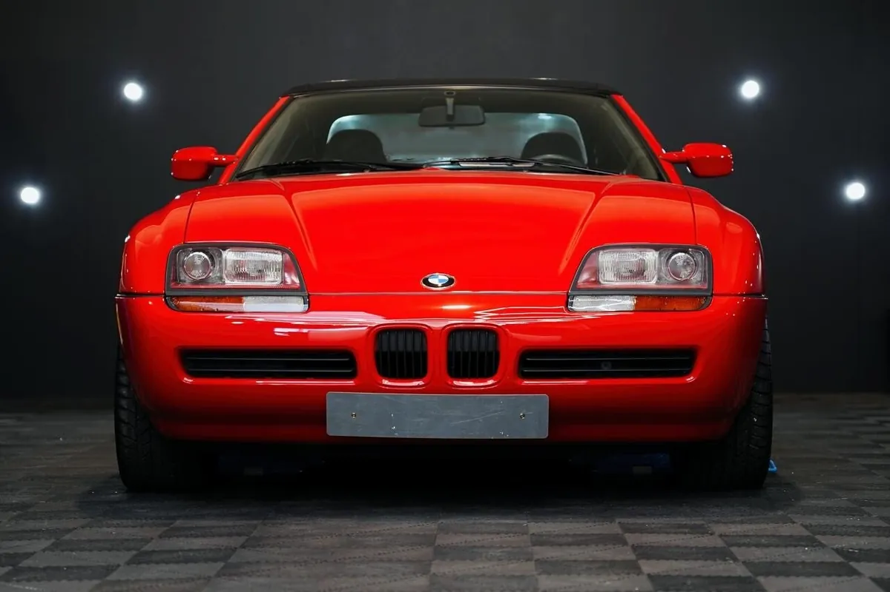

01
Exterieur
Ingefoamd met onze eigen pH-neutrale foam, gewassen met de twee-emmermethode en gedroogd met ultrazachte doeken. Kieren worden drooggeblazen. Bij het polijsten krijgt de lak zijn diepe glans terug en verdwijnen swirls en krassen.
- Onderhoud exterieur± 90 minuten, wekelijks of om de twee wekenvanaf € 90
- Polijsten in 1 stapglans terug, lichte waskrasjes wegvanaf € 400
- Polijsten in 2 à 3 stappenvoor diepere defecten, 1 à 2 werkdagenvanaf € 800
